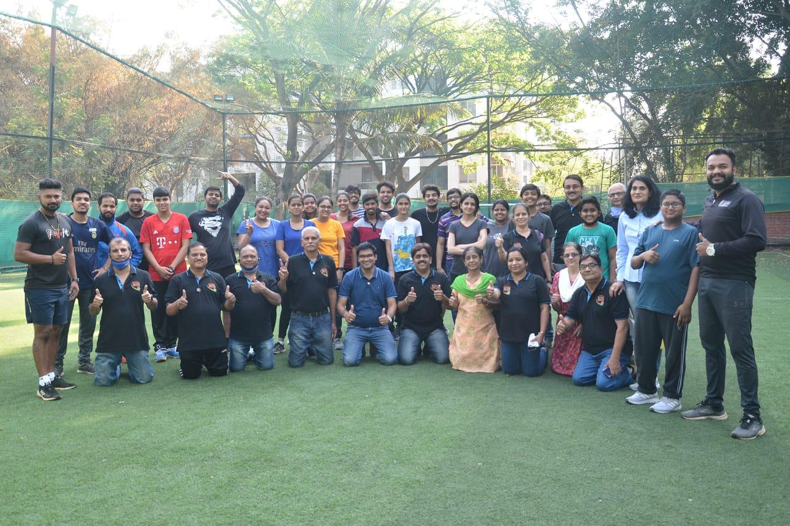
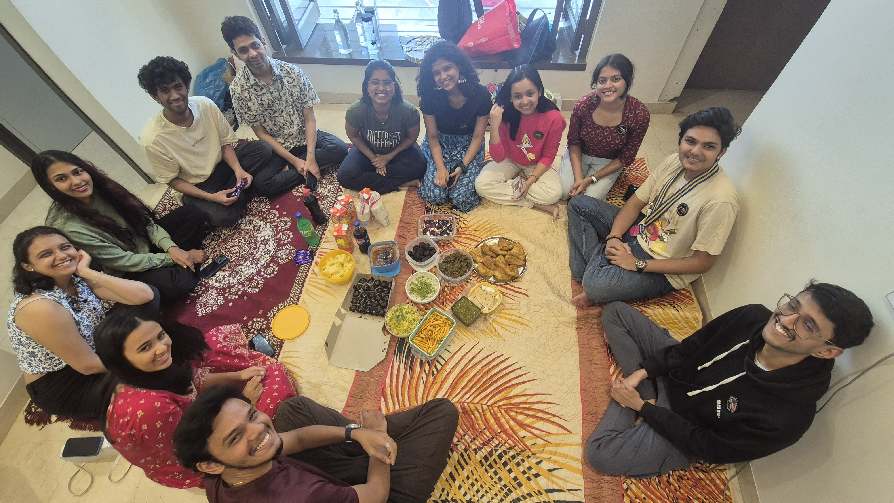
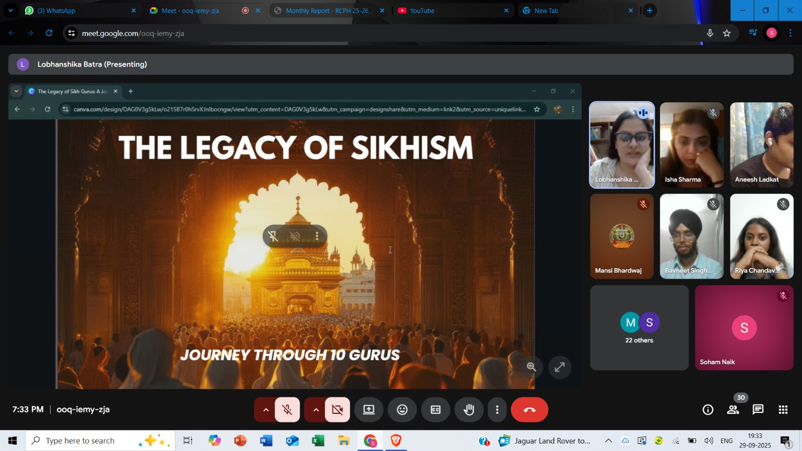
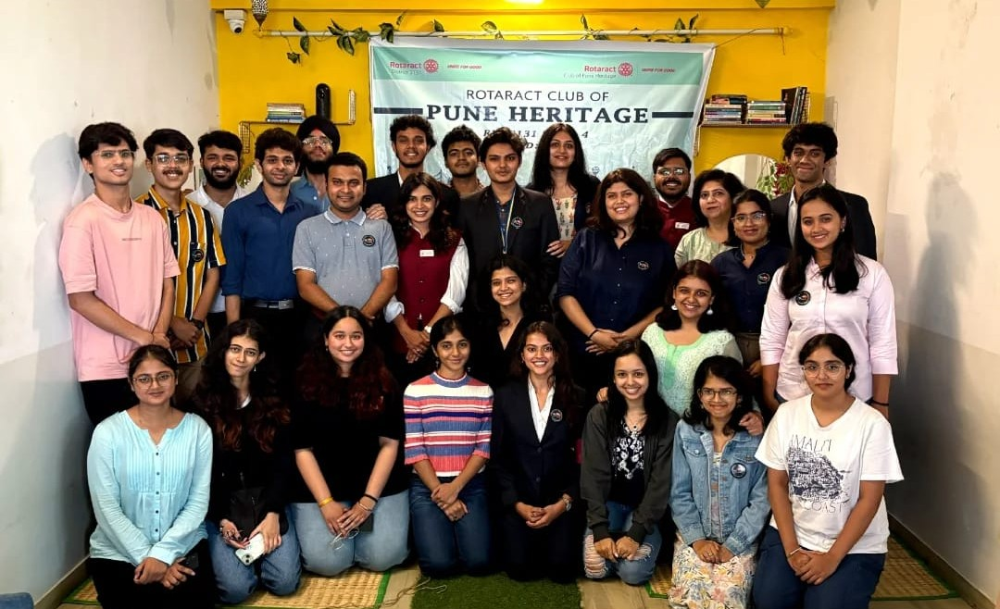
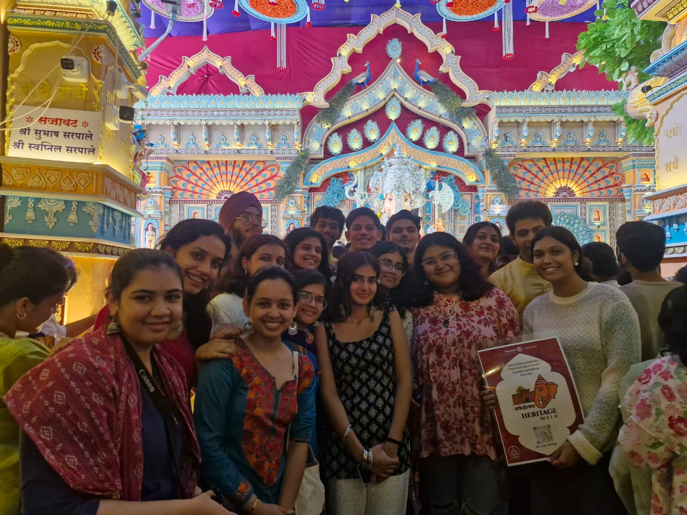

Community service Pune
Projects by Rotaract Club of Pune Heritage
Every RCPH project starts with a simple idea: bring people together and do something useful with the time, energy, and skills we have.
Our projects include education support, fellowship activities, cultural exchanges, leadership experiences, and collaborations with schools, clubs, and communities.
Featured Project Stories

Project EduReach
Avenue: Community Service and Education
Through Project EduReach, RCPH supported SSC students with e-learning kits and encouragement before their board examinations. The goal was simple - help students feel a little more prepared and a little more supported.

Sports RYLA
Avenue: Professional Development and Fellowship
Sports RYLA brought leadership, teamwork, and energy onto the field. It was a space for members to compete, cheer, collaborate, and build confidence beyond regular meetings.

PotLuck
Avenue: Club Service
PotLuck was one of those simple fellowship moments that make a club feel like a club - food, conversations, laughter, and members getting to know each other better.

Cultural Exchange
Avenue: International Service
Cultural Exchange gave members a chance to learn about different traditions, stories, and perspectives while building connections beyond their usual circle.

Pages of Hope
Avenue: Community Service
Pages of Hope focused on sharing books and conversations with students. More than a donation drive, it was a small effort to encourage reading, curiosity, and connection.

Club Assembly
Avenue: Club Service
Club Assembly helped the team align on roles, goals, and the year ahead. It gave members clarity on where the club is headed and how everyone can contribute.

Samyati 3.0
Avenue: Club Initiative
Samyati 3.0 is one of District 3131's and RCPH's joint club experiences, bringing members and collaborators together through planned activities, shared effort, and club spirit.
Build With Us
NGOs, colleges, sponsors and Rotary clubs can work with RCPH on community service Pune projects,
professional development Pune sessions and Rotaract events Pune.
Explore upcoming events, read the RCPH FAQ, or contact the club for collaborations.